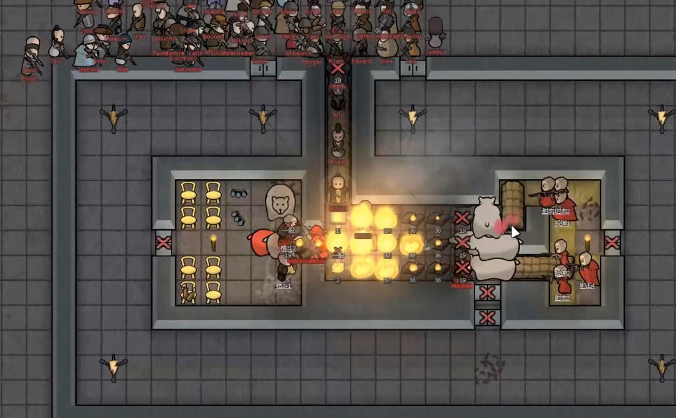

Now, we come to the hot topic: the singularity point or the strange point (奇点), invented by Chinese RimWorld extraordinaire, 龙雨吴天, who we’ll refer to as DragonRain, and sponsored by AdamDoesEverything. Special thanks to content creators 爱猫的九号线 (Metro Cat Nine) and 葱哥 (Brotha Onion) for providing clear explaination and footage that made this guide possible, you can find links to their channel and videos below
The singularity point is what the singularity kill box and many other optimized kill boxes all boil down to. Imagine yourself camping behind an open doorframe, only aiming at a passersby's toes when they just entered or left the frame, and therefore fearing no retaliation. The location where the passersby is positioned at is defined by its creator DragonRain as the singularity point, a strange (奇) point where "one can shoot at, but the other can't shoot back". The existence of the singularity point is a god send for killbox players - allowing players to cheat the enemy AI by granting pawns 2-3 tiles of invisibility, or even the ability to shoot though walls.
wait, is that a bug?
How do we find these singularity points then? Well, it's actually quite simple. Due to a combination of how vision and peeking work in RimWorld, each pawn can be visualized as having four toes sticking out of the body in four directions, with each toe covering one tile, just like the body. Therefore, a pawn effectively covers an area like this:

the red tile is the body, the yellow tile is where the money is at
These toes don't matter when two pawns are aiming at each other in the old Western way—the body does. However, they become significant when there's an obstacle between the two pawns. The obstacle causes the pawns' vision to shift from the body to the toes, allowing one to shoot the other when they gain the right distance away from the obstacle. Let's imagine again that you and your enemy are camping on opposite sides of a large barrel, almost back to back, with your visions of each other blocked by the barrel. If you then decide to move vertically away from the barrel while your enemy remains stationary, you might now gain sight of your enemy's exposed limbs when all they can see is still the barrel. Let's use auto turrets to mimic the player or the enemy, and the "draw avoid grid" tool as their vision.
Two of the enemy’s toes are covered by the the turret's avoid grid
Meaning that they’re exposed to the player pawn and can be targeted
The enemy is one tile closer to the wall, it can’t see player pawn's toes nor body
Note: you can have a corridor of adjacent singularity points
In addition, you can combine the singularity point with peeking (using walls, barricades, furniture, etc.). This allows two or more pawns to shoot at one or multiple singularity points. Peeking will only allow you to hit the back toe and either the left or right toe of your enemy, depending on your peeking direction. We'll use auto turrets to simulate peeking.
By placing a turret next to a pawn and using its avoid grid to simulate peeking vision
We can draw a line of singularity points (red) where either the enemy’s left or right toe is covered by avoid grid
Note that Erika can be shot by pawn you and enemy but cannot retaliate
By making some changes, we can now have four people aiming at one singularity point in the entrance. Now, the enemies walking in will either die instantly due to sheer firepower or perish aimlessly on their way up while attempting to find cover. This straightforward setup can be further improved by adding EMP devices, creating additional shooting positions at the top, and including shooting positions at the bottom.

Modified singularity killbox by Brotha Onion
Killboxes like these hinge significantly on the premise that enemy pawns won't be able to detect the player's pawns as they enter. This ensures that the enemies won't seek cover or return fire while they're traversing the corridor leading to the killbox. By the time the enemies do gain vision, they are already exposed, and due to unique programming, will prioritize seeking cover before retaliating. This characteristic can be leveraged by players who can strategically position melee pawns or pets at the cover points, transforming them into fire rooms, or utilizing a combination of these tactics. It's crucial to remember, however, that mechanoids don't adhere to the cover-seeking behavior and may occasionally interfere with the collision system. In such scenarios, the use of EMP devices, high damage-per-second (DPS) outputs, and animal shields becomes indispensable.
Flaming Hot Lagenaria KillBox by Metro Nine
Note that the enemies are running into the melee pawns and bears after leaving the singularity point
Reference:
Metro Nine Channel: https://space.bilibili.com/397266532
Brotha Onion Channel: https://space.bilibili.com/393259585
Dragon rain Channel: https://space.bilibili.com/354306142
https://www.bilibili.com/video/BV1Ra41147dj/?spm_id_from=333.788&vd_source=1946e6df7dc0c032762c422d187a1508
https://www.bilibili.com/video/BV1FY4y1W72y/?spm_id_from=333.788&vd_source=1946e6df7dc0c032762c422d187a1508
https://www.bilibili.com/video/BV1LD4y137qM/?share_source=copy_web&vd_source=f717728c9199a1ccd9a1d0a6d4da3a36
https://tieba.baidu.com/p/8277382025
https://tieba.baidu.com/p/6570591571